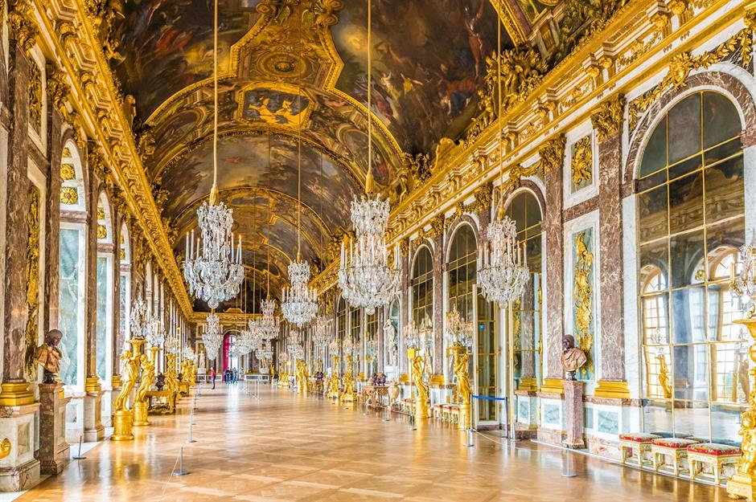

During this turbulent times the Navraj Palace slipped into a state of neglect.The hastily constructed palace soon fell into disrepair.A masterpeice in Indo-Saracenic architecture,on par with great residences of Italy. Designed by Italy Architect,Edwis,knowm as palace os peace.It is believed to have descended from thr Moon.The exquisite lake palace was extensively used as a summer retreat for the Navraj Royal family. This luxurious palace has attained global fame from all over the world. It is made up of white,pink marvelous stones.

Highlights
Embark on an enchanting journey into the legendary lifestyle of the esteemed Navraj royal family in Hyderabad, perched elegantly over the serene waters of Lake Alwal.The uniquely carved pillars, domes, and wall art highlight the rich heritage of Hyderabad. It offers you a variety of leisure activities from boat rides to water safaris. To this day, it remains the cherished residence of the royal family, a testament to its timeless allure. The original palace décor has been painstakingly preserved and restored, ensuring an ambiance of regal opulence.